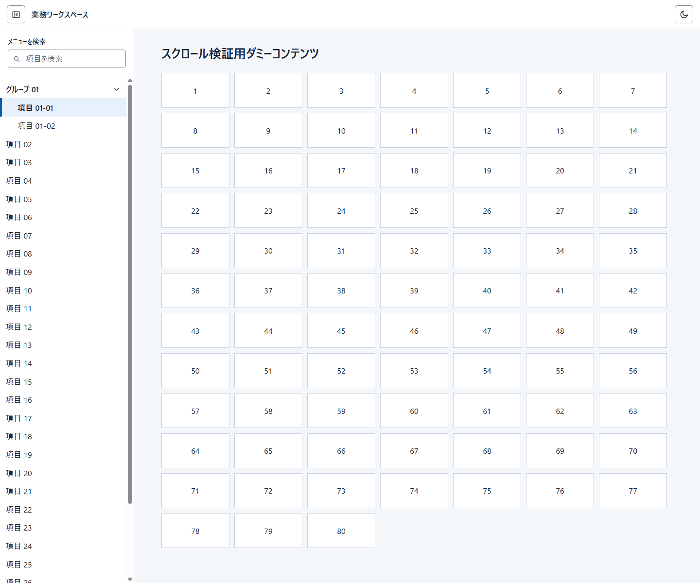
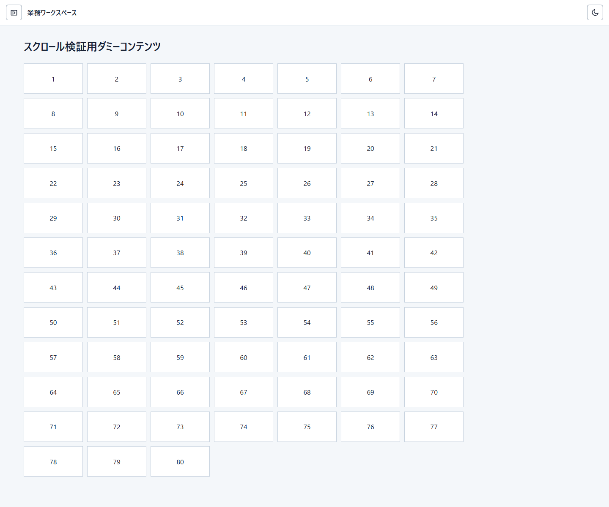
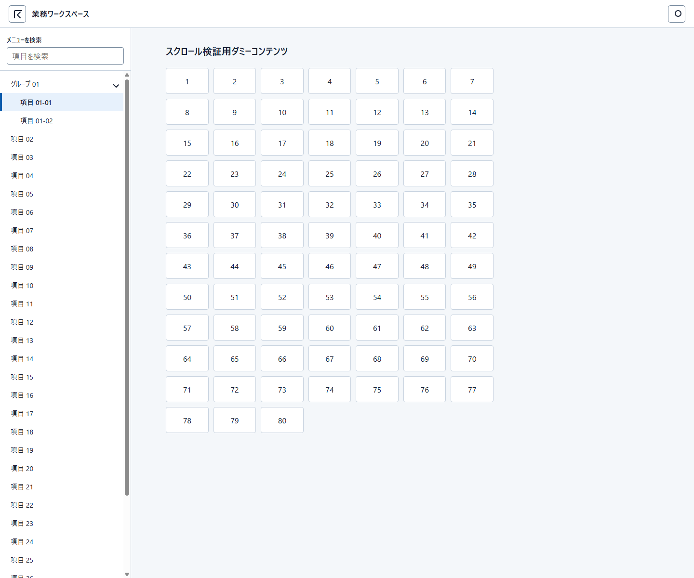
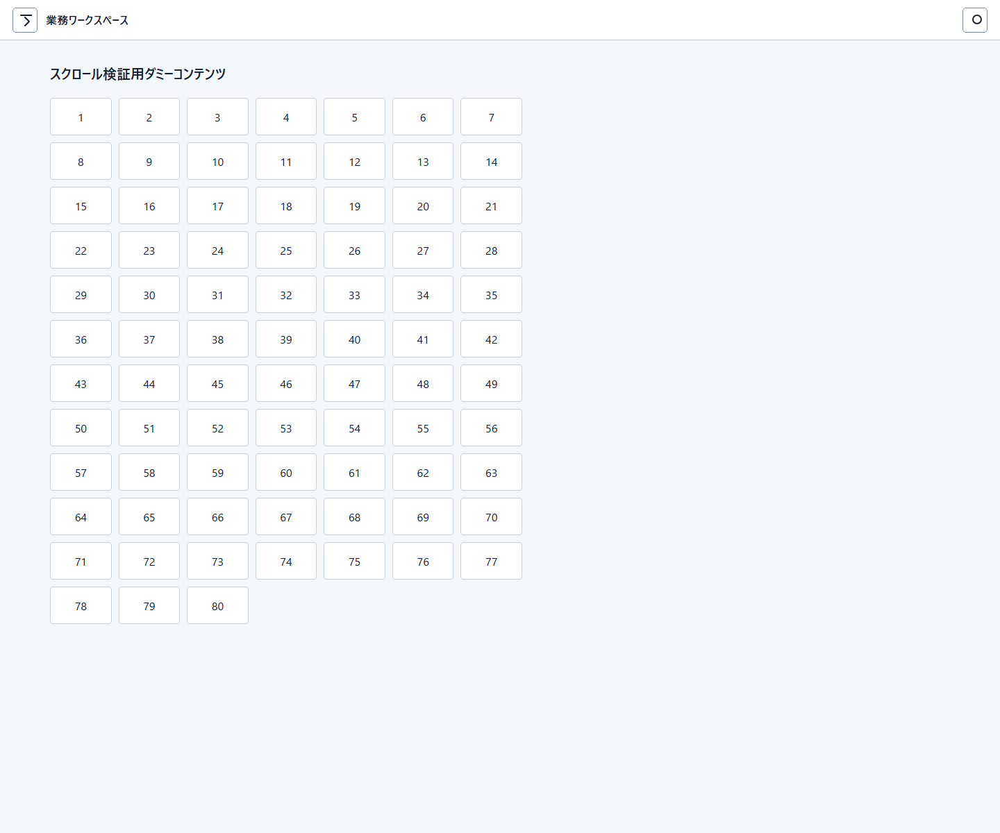
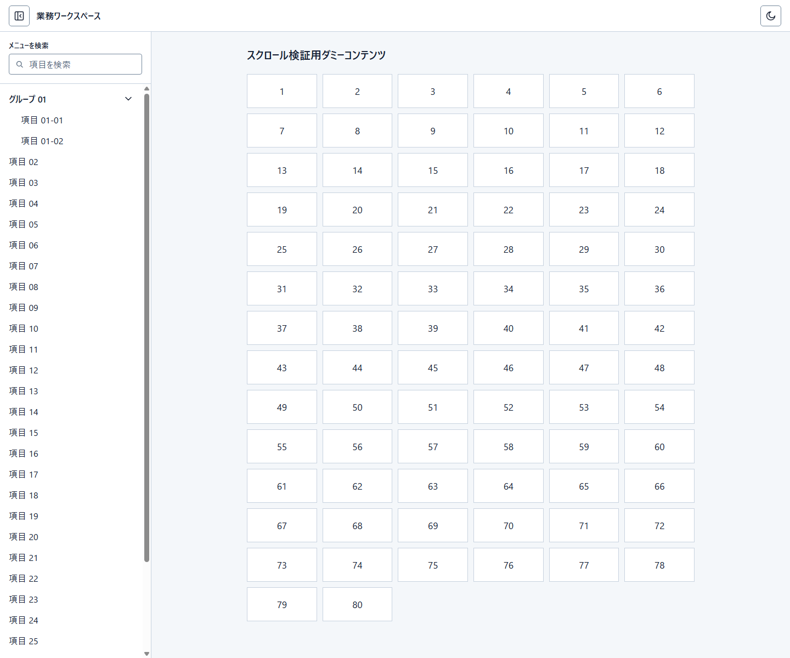
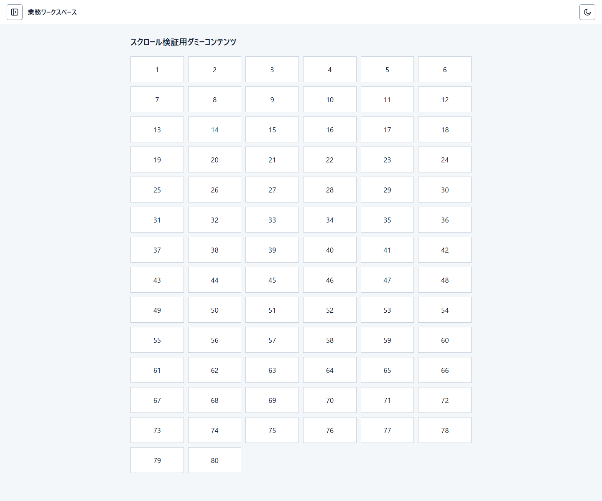

Run 1
Light / Drawer表示

Light / Drawer非表示

3件とも、同じManifest snapshotと同じ日本語の共通シェル要件だけから新規に作成しました。過去の画面、PNG、比較結果、テストは生成入力に含めていません。
生成モデル: gpt-5.6-terra / reasoning effort: medium。Manifest snapshot: 46 files。固定プロンプトは各Runで同一です。
入力ファイル: consumer-input/user-prompt-ja.md / SHA-256: 1CE97BD05A35A23B3298D31CF9DD09B2E7C28C5C41822EDA842991686876AFD4
# Fixed user prompt 業務アプリで再利用する共通シェルを作成してください。 - 作成対象は共通Header、Drawer、およびスクロール検証用の中立workspaceだけです。検索、一覧、読取、追加、編集、削除などの業務画面・画面遷移は作成しません。 - Headerには `業務ワークスペース` を表示します。Headerの先頭側にDrawerを開閉する制御を置きます。 - Drawerの表示状態と非表示状態の両方を確認できる静的HTMLにしてください。`?drawer=open` と `?drawer=hidden` のどちらでも初期状態を表示できるようにします。 - Drawerの固定fixtureは、`グループ 01`、子 `項目 01-01`、子 `項目 01-02`、`項目 02` から `項目 30` です。現在位置はproduct bindingが供給する値であり、初期比較表示ではその1件を `項目 01-01` とします。これはfixtureの初期値であり、コンポーネントが特定の項目を常に選択する既定値ではありません。各固定項目には利用可能な静的destinationがあります。今回の確認では項目を選択すると、画面遷移を作らずに現在位置のbinding値だけをその項目へ更新し、選択表現の移動を確認できるようにします。親には末尾側の展開状態アイコンを表示してください。 - メニュー内検索が利用可能です。メニュー検索の対象は、このDrawerの固定fixtureだけです。 - workspaceには、`スクロール検証用ダミーコンテンツ` と、`1` から `80` までの意味を持たない連番だけを表示してください。業務データ、説明文、操作、画面遷移は追加しません。 - Drawerとworkspaceの長さを利用して、各領域のスクロールを確認できるようにします。 - Drawerを非表示にしたとき、空のDrawer境界や残存余白を残しません。 - テーマはライトとダークを切り替え可能にし、初期状態はライトにします。Headerの末尾側に、次のテーマへ切り替えるアイコンのみの制御を置きます。`?theme=light` と `?theme=dark` のどちらでも初期状態を表示できるようにします。可視の `Theme` または `テーマ` というキャプションは表示しません。 - アイコンには Lucide を使用します。外部CDNや外部scriptを使わず、この静的HTMLのローカル成果物として表示してください。 - 外部画像、外部フォント、外部CDN、外部scriptは使用しません。





